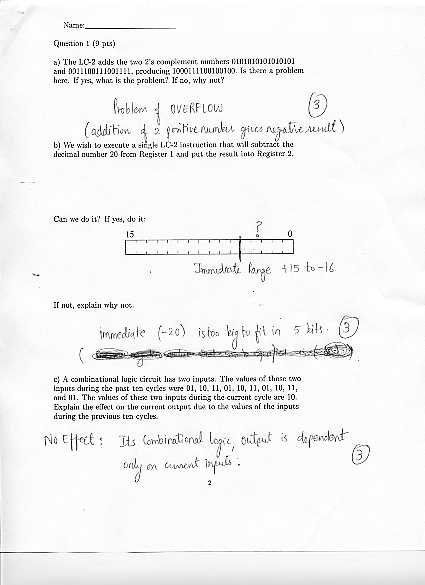
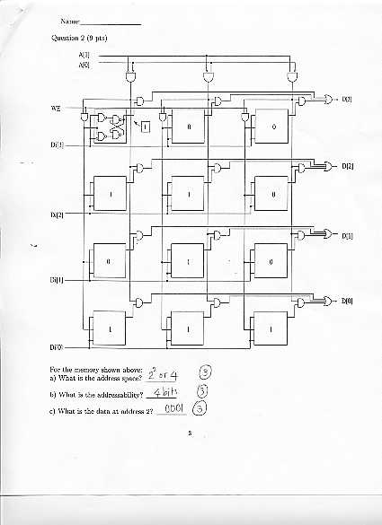
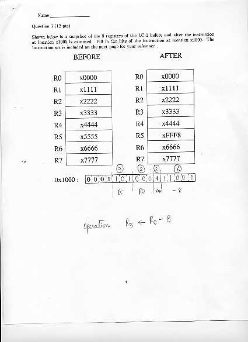
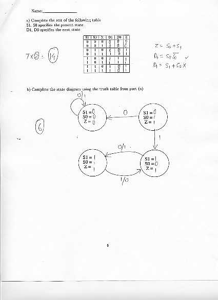
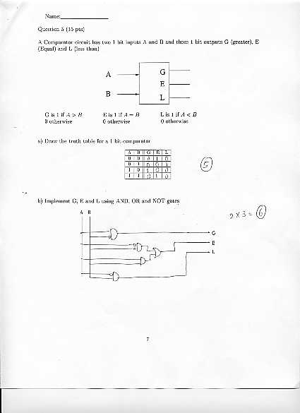
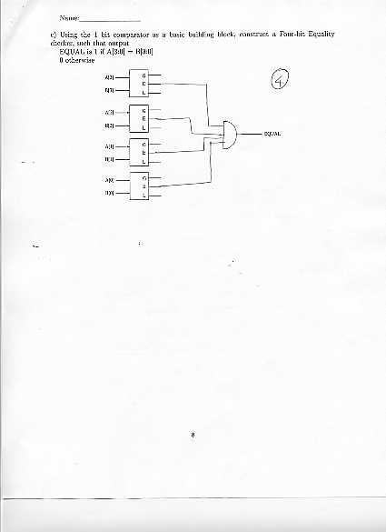
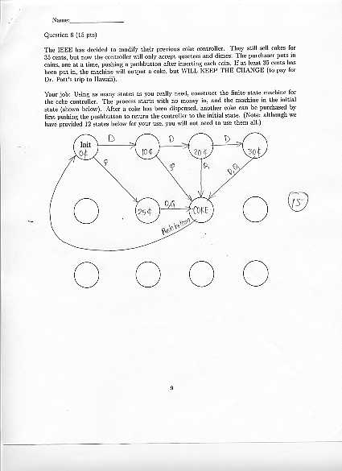
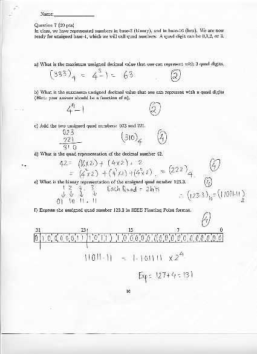

Department of Electrical and Computer Engineering
The University of Texas at Austin
EE 306 Fall 2002
Yale Patt, Instructor
TAs: Asad Bawa, Linda Bigelow, Mustafa Erwa, Lester Guillory, Kevin Major,
Moinuddin Qureshi, Paroma Sen, Tanay Shah, Santhosh Srinath,
Matt Starolis, David Thompson, Vikrant Venkateshwar







